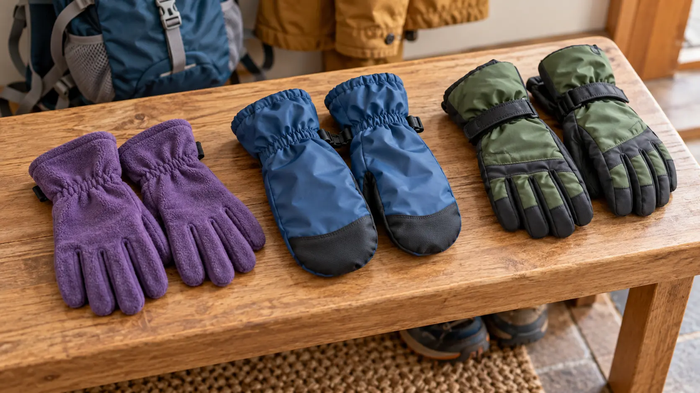

Thin fleece gloves
Best for: cool, dry, active walks and high dexterity. Tradeoff: wind and wet protection are usually limited. Do not buy for: slush, steady rain or long stationary cold unless the maker explicitly supports that use.
KIDS’ COLD-WEATHER GEAR · FIT FIRST · BUY ONE JOB
Warm hands are not a brand problem. Match the handwear to wetness, wind, effort and the tasks a child must still perform—then test the actual pair with the actual jacket.

A child walking a dry 45-minute trail has a different hand problem from a child building wet snow, holding trekking poles or waiting at an overlook in wind. Start with four questions: Will the hands get wet from weather or play? How much continuous movement will create body heat? Must the child operate zippers, buckles, snacks or poles? Is there a warm car or building close enough for a quick exit?
The American Academy of Pediatrics advises several thin layers, insulated boots, gloves or mittens and regular warm-up breaks for children outside in winter, with wet clothing changed promptly. The National Weather Service says mittens generally retain warmth better than gloves and emphasizes staying dry and out of the wind. Those are system-level principles, not proof that a particular glove is warm enough for your child or conditions.
1. Put on the full system. Use the actual base layer and jacket, not a T-shirt in a warm living room. Seat the fingers or mitten fully without forcing them. 2. Check the cuff. Raise both arms, reach forward and bend the elbows. The sleeve and glove should still overlap. Decide whether the cuff is designed to go under or over the jacket and follow the manufacturer’s instructions.
3. Make a loose fist. The child should bend the fingers without fighting excess fabric or feeling hard pressure at the tips. Ask about numbness, tingling and pinching; do not use “they’ll stretch” as the fit plan. 4. Run the grip tasks. Hold a water bottle, operate a jacket zipper, open the daypack buckle, pinch a snack bag and grasp any trekking-pole handle used on the route. A mitten can be the right warmth choice even if it requires an adult to manage zippers; name that tradeoff before the trail.
5. Time the removal and reset. The child removes the pair, uses a tissue or snack and puts it back on correctly. If the liner inverts, the cuff jams or the pair takes several minutes, practice at home or choose a simpler design. 6. Do the damp check. After ten active minutes outside, check for sweat. A soaked interior on the warm-up lap predicts a colder second half.
Some product pages publish temperature ranges, warmth scales or activity icons. Treat them as manufacturer-specific guidance, not a universal rating. Wind, wetness, circulation, effort, duration, individual cold sensitivity and fit all change performance. A tight pair can compress insulation and restrict circulation. A loose pair can reduce control and allow cold air or snow through the cuff.
Read the full material and construction description. “Waterproof” should refer to the finished item and its instructions, not merely one fabric layer. “Water-resistant” is not the same claim. Fleece can remain useful when lightly damp and often dries faster than cotton, but ordinary fleece is not a rain shell. New York DEC advises wool or synthetics rather than cotton in cold, wet conditions because cotton holds water and drains body heat.
Choose mittens when warmth and weather protection outweigh finger independence. Choose gloves when grip and manipulation are essential and conditions stay within the pair’s limits. Use a liner-plus-shell only when the exact combination fits: layers that compress the hand are not an upgrade. For many families, the most reliable setup is one task-appropriate main pair plus one dry, simple spare in a sealed bag.
Avoid battery-heated gloves for ordinary school-age family hikes unless there is a specific, medically informed reason and the exact product’s instructions, battery system and recall status have been reviewed. The Consumer Product Safety Commission has published a serious burn warning for a battery-heated glove model after overheating incidents. That does not condemn every heated product, but it is enough reason not to treat electronics as a shortcut around fit, layers, breaks and an exit plan.
Dry fall walk, roughly 40–55°F: a thin fleece or synthetic glove may be enough for a child who runs warm and keeps moving. Carry a dry spare and rain shell. Wet snow or cold rain near freezing: prioritize a water-blocking outer layer and enough insulation without crowding fingers. Cold, windy overlook: mittens usually protect warmth better; shorten the stationary stop. Poles, camera or frequent buckles: use a glove with dependable grip, or accept that the adult manages the task while the child keeps mittens on.
These examples are decision prompts, not medical or temperature guarantees. Check the National Weather Service forecast and wind chill, use the family weather cutoff, and turn back for persistent discomfort. White or pale skin, loss of feeling, confusion, uncontrolled shivering or unusual drowsiness are not “tough it out” moments; get indoors and seek appropriate medical help.
Measure the hand using the maker’s current method, then compare that measurement with the exact size chart. Check the return window before outdoor use, especially when buying online. Read laundering and drying instructions; a pair that cannot be dried overnight may fail a weekend trip. Search the exact model at the CPSC recall database. Verify whether the listed shell, membrane and insulation claims apply to the whole pair.
The affiliate options below are category searches, not tested winners. Confirm the current product page, manufacturer instructions, material claims, size chart, return terms and recall status before keeping anything.
Label left and right only if that helps the child, keep the spare pair together in a resealable dry bag, and attach nothing that changes the fit or creates a snag. Air-dry according to the maker’s instructions. Do not put a membrane, coated shell or battery product near heat unless its instructions explicitly allow it. At the trailhead, place the spare where an adult can reach it without unpacking the whole family hiking daypack.
Pair glove decisions with the kids’ hiking sock fit check and footwear fit guide. Warm hands do not rescue wet cotton socks, poor shoes or a route that should have been shortened.
Skip or shorten when the correct pair is missing, already wet, painfully tight, or impossible for the child to manage with the real jacket. Skip when wind chill, precipitation, darkness or the distance from shelter exceeds the family’s plan. Children with circulation concerns, reduced sensation or other medical needs require guidance from their clinician; a buying guide cannot set a safe exposure time.
MAKE THE DAY COUNT
Build the plan your family can finish well, then leave enough energy for the next part of the day.
More family plansTHE USEFUL STUFF
These are practical categories to compare—not a reason to overpack. Check fit, specifications and current reviews before buying.
Paid links: As an Amazon Associate I earn from qualifying purchases. You pay no additional cost.
Compare hand measurement, seam comfort, cuff overlap, grip and the maker’s exact material and care instructions.
See current options → COMPARE ON AMAZONCheck whether the shell is insulated, how the seams and cuff are constructed, and which liner the maker permits.
See current options → COMPARE ON AMAZONPrioritize present fit, jacket-cuff compatibility, grip and a realistic drying plan over a vague temperature claim.
See current options →